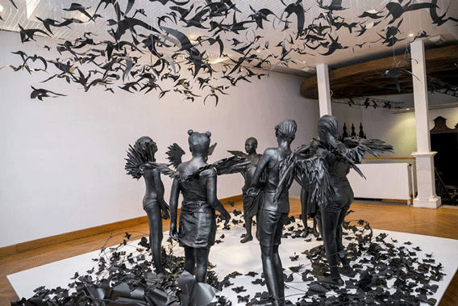

Flying Girls
Made from fibreglass, metal, resin and black paint, Flying Girls portrays a character Alatise dreamed of named Sim who lives two lives. In one life, Sim is a nine year old girl who works as a servant in Lagos. In the other she lives freely with birds and butterflies in what Alatise describes as “a moonlit world of escapism.” According to Alatise, domestic slavery is “a modern type of slavery” that happens all over the world, especially in Nigeria. She says oftentimes “girls are taken away from their homes and they are rented out as house keepers and sex slaves.” When Sim is in her dream world, she is invincible and has the power to be and do whatever she wants to do. It seems as if it is what Alatise wants every girl to feel through this piece.